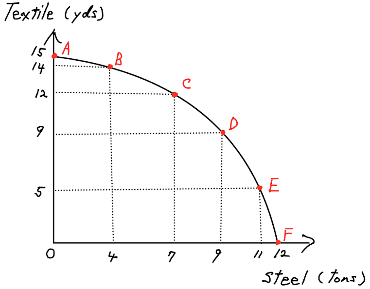
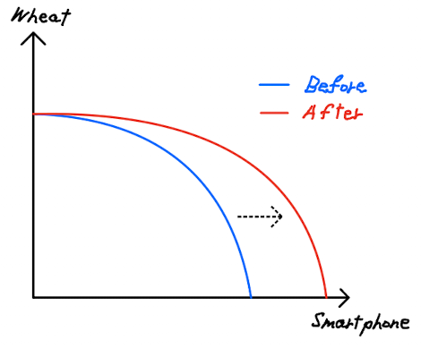
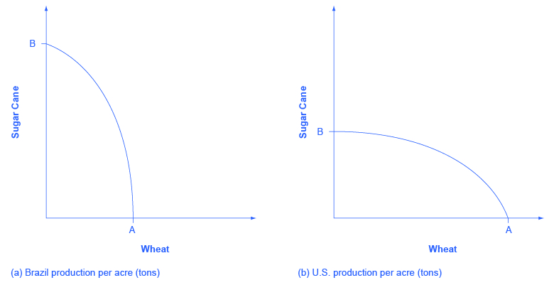

APEC 1101 - Applied Economics, University of Minnesota
Big question: Why do people/nations specialize in producing specific goods/services?
Note: The appendix is optional. You can use it for further study if you want to practice more.
What is PPF?
PPF(PPC) is a graphical illustration showing all possible combinations of two goods/services that an economy can produce given the available resources and technology.
PPF also shows important information:
Consider a society consists only of Helen, who allocates her time between sewing dresses and baking bread. Each hour she devotes to sewing dresses yields 4 dresses and each hour she devotes to baking bread yields 8 loaves of bread.
If Helen works a total of 8 hours per day, graph her PPF showing all possible combinations of dresses and loaves of bread she can produce in a day.
(Let’s take the dresses on the horizontal axis and the bread on the vertical axis.)
What is the marginal opportunity cost of producing a dress?
(Hint: To produce one more dress, how many loaves of bread does Helen need to give up?)
Let’s think one step further.
In the problem, the opportunity cost of producing a dress is constant regardless of how many dresses Helen produces. We call this “constant marginal opportunity costs.”
Let’s think about a slightly more complicated but realistic example. Consider the following PPF:
Increasing Marginal Opportunity Costs
What is it?
Why does it arise??
For example
Note
Although the constant marginal opportunity cost is less likely, we commonly use it when calculating the comparative advantage just because it makes the calculation easier!
Suppose we have two countries, Brazil and Germany. Each producing two goods, Steel and Textile.
| Country | Steel (tons/day) | Textile (yds/day) |
|---|---|---|
| Brazil | 2 | 10 |
| Germany | 4 | 40 |
Germany has higher productivity in both goods. Does it mean that Germany should produce both goods?
No. We need to account for the cost of producing each good. (e.g., How many yards of Textile Germany needs to give up as a cost to produce one ton of steel?)
Principle: We should determine who to produce a good/service based on who can produce a unit of that good/service with the lowest opportunity cost.
What is it?
A nation/person has a comparative advantage over another nation/person if they can produce a good/service at a lower opportunity cost.
For example, to find out who has a comparative advantage in producing Steel, we need to ask who can produce a unit of Steel with the lowest opportunity cost. (This equivalent to divide the number of units the country lose by the number of units the country gains.)
| Country | Steel (tons/day) | Textile (yds/day) |
|---|---|---|
| Brazil | 2 | 10 |
| Germany | 4 | 40 |
Who has a comparative advantage in producing Steel? Who has a comparative advantage in producing Textile?
Another important aspect of the PPF is that it can shift outward or inward depending on changes in the economy’s resources or technology.
Consider an economy that produces smartphones and wheat under increasing marginal opportunity costs. A technological advancement in smartphone manufacturing leads to a substantial decrease in production costs relative to wheat. Illustrate this change using a production possibility curve. Explain the potential benefits for the economy resulting from this innovation.

The two figures below show the PPFs of two countries, Brazil and U.S.

Which country has a comparative advantage in sugar cane production? Which country has a comparative advantage in wheat production? (Hint: Remember that the slope of the PPF indicates the opportunity cost of producing one good versus the other good.)
Recall that the slope of the PPF indicates the opportunity cost of producing one good versus the other good. The flatter the PPF, the lower the opportunity cost of producing the good on the horizontal axis.
So, the U.S. has a flatter PPF (the slope of the PPF is lower) than Brazil, meaning that the opportunity cost of wheat in terms of sugar cane is lower in the U.S. than in Brazil. So, the U.S. has a comparative advantage in wheat production. Conversely, the opportunity cost of sugar cane is lower in Brazil (you can see this if you take sugar cane on the horizontal axis and wheat on the vertical axis), so Brazil has a comparative advantage in sugar cane production.
Example: \(y = -2x + 6\)
the slope is \(-2\), meaning that for every one unit increase in \(x\), \(y\) decreases by 2 units.
Don’t you familiar with this concept? Yes, you do! This is the same concept as marginal change (e.g., marginal opportunity cost) in economics.
The formula for the slope
Given any two points \((x_1, y_1)\) and \((x_2, y_2)\), the slope of the line passing through these two points is: \[ \text{slope} = \frac{y_2 - y_1}{x_2 - x_1} \]
Suppose an economy produces two goods, Steel and Textile. The nation has the following Production Possibilities Frontier (PPF):
| Steel (tons) | Textile (yrds) |
|---|---|
| 2 | 7 |
| 4 | 3 |
(For example, the table means that the economy can produce 2 tons of steel and 7 yards of textile given the available resources and technology.)
Question: What is the marginal opportunity cost of producing Steel?
You can phrase this question as follows: “How much textile do you need to give up to produce one more ton of steel.” or more generally, “How much Textile production changes when the Steel production increases by one ton.”
So, \[ \frac{\text{change in textile}}{\text{change in steel}} = \frac{3-7}{4-2} = -2 \quad (\text{ or } \frac{3-7}{4-2}= \frac{-4}{2} = \frac{-2}{1} ) \]